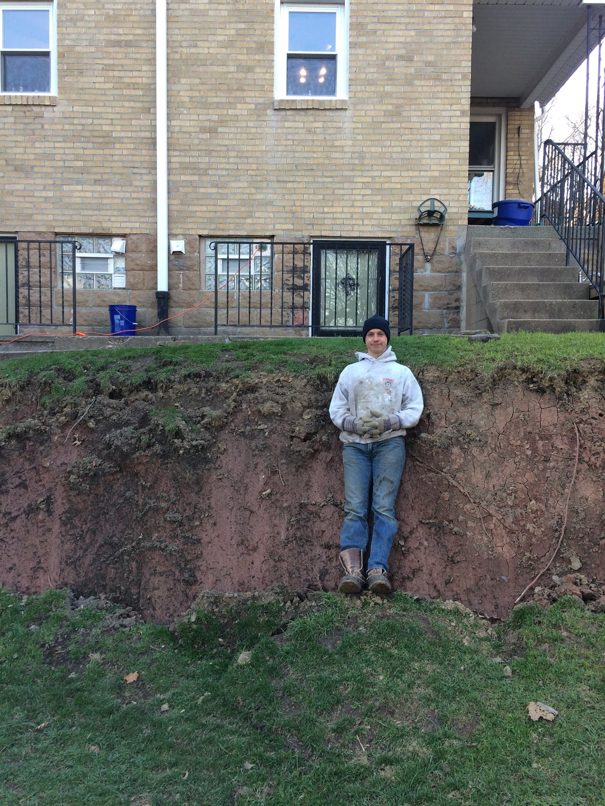
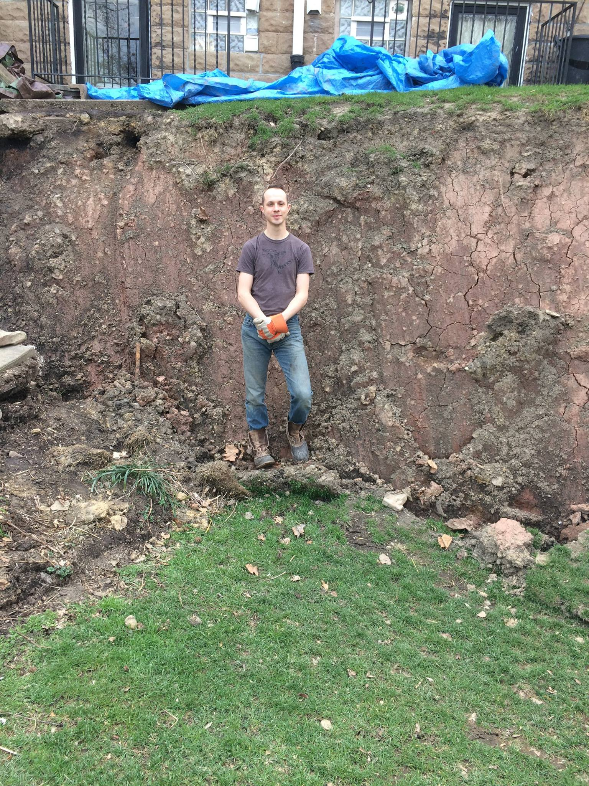

In 2017 our house, backyard, and land in Pittsburgh, PA, USA experienced a landslide.
Over time I hope to add some pictures/video of what the yard looked like previously. But in the still cover picture in the video below where the haybales are, the top of tarps, myself in the blue jacket, and the small patch of grass? That all used to be connected straight to the concrete and grass you see halfway down the still cover picture.
One of the first warning signs was a small "crack" in the backyard in Feb 2017. And here's a month later:  And then *four* days later: 
At the time I was unable to find internet resources for how individual homeowners could survive such a thing - logistically or psychologically.
The problem is on a huge scale - this isn't something a few friends and some buckets and shovels can fix, and it's above the paygrade of many contractors. It requires professional engineering plans. Finding an engineering firm that specializes in landslides is one hurdle. Finding an engineering firm that considers that the problem is fixable is difficult. Finding an engineering firm that will take on the work is another - most are not allowed by their insurnace policies to work on residential properties. And this is only for the earth movement.
Home insurance policies almost never cover landslides or any kind of earth movement and the insurance company drops you completely from coverage immediately. Likely your largest asset is now uninsurable from any further damage.
The home is often condemned as unlivable. We lived in three other friends' homes for two years.
The bank is unphased by the landslide. Your mortgage payments are expected in full and there is no pause or forgiveness.
Likely your largest asset is worth $0 or a few thousand dollars for the land that it's on. Someone else would have to be willing to bulldoze the house.
Our federal, state, county, and local government was of no use. We live within the City of Pittsburgh but that did not matter.
You'll likely need some lawyers.
All of the above costs A LOT.
To be continued. Feel free to contact me, although I hope you don't have to.